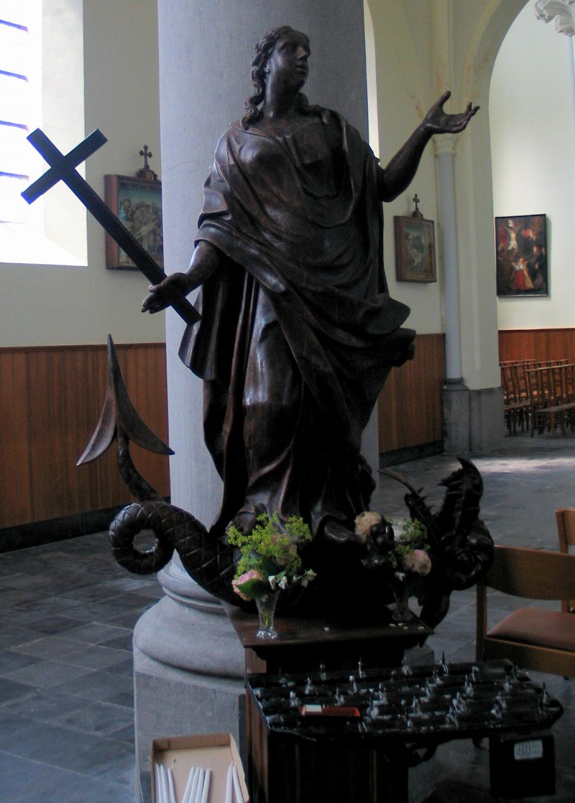

Oorsprong van Sint-Margriete
De naam Sint-margriete is afgeleid van de heilige Sint-Margaretha. Ook wel Margaretha van Antiochië genoemd. Zij is een heilige en martelaar van de Rooms-Katholieke Kerk.

Wat de levensgeschiedenis van Margaretha betreft, is niets met zekerheid te vertellen. Verhalen over haar duiken pas op in de 9e eeuw. Volgens de overlevering, die te vinden is in de Legenda Aurea is zij geboren in de 3e eeuw in Antiochië, de hoofdstad van Pisidië, als dochter van de heidense tempelpriester Aedesius. De streek in West-Azië maakte deel uit van het Romeinse Rijk. Haar vader minachtte haar om haar christelijk geloof. Margaretha leefde op het land als herderin. Toen de stadsprefect Olybrius haar een huwelijksaanzoek deed, op voorwaarde dat ze haar geloof zou afzweren, weigerde ze. Daarop werd ze gevangengezet en gemarteld. Dan volgen een aantal wonderbaarlijke gebeurtenissen. De bekendste is dat satan, in de gedaante van een draak, haar opslokte. Margaretha ontsnapte levend doordat de draak haar uitspuwde, vanwege het kruis dat ze droeg wat zijn ingewanden irriteerde. Uiteindelijk werd ze toch omwille van haar geloof ter dood gebracht.